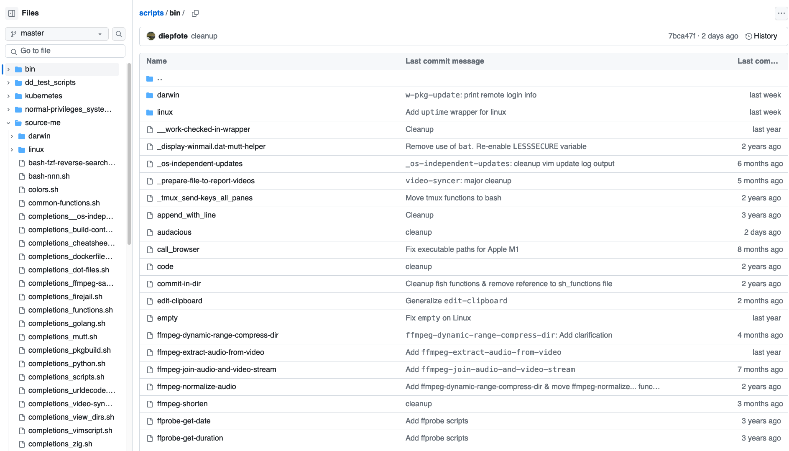

Florian Sorko's terminal config
Table of contents
- dot-files
- bash script & source-me collection
- bash helpers in go
- bash helpers in python
- git
- vim config
dot-files
- tmux config
- ... and anything else not in my bash script collection
bash script & source-me collection
Examples

bash helpers in go
I use them in tmux statusbar & pane & PS1 for bash. find here
Where I set them in bash:
- source-me/bash-prompt.sh
sets PS1 (small golang program, why? faster than a script -> fast REPL)
and PROMPT_COMMAND (includinghistorycommands) - additional history control settings left in
.bashrc.
Where I set them in tmux:
bash helpers in python
extend kubectl bash completions
miscellaneous
- display ics calender files in plaintext
- convert latex editor Gummi snippets to Gedit snippets
- read toml setting
- urldecode/-encode
- regex substitution
git
- aliases
- bash helpers
- general
- linux only
vim config
find here * Plain vimscript * Plugin configuration and vimscript based on plugins